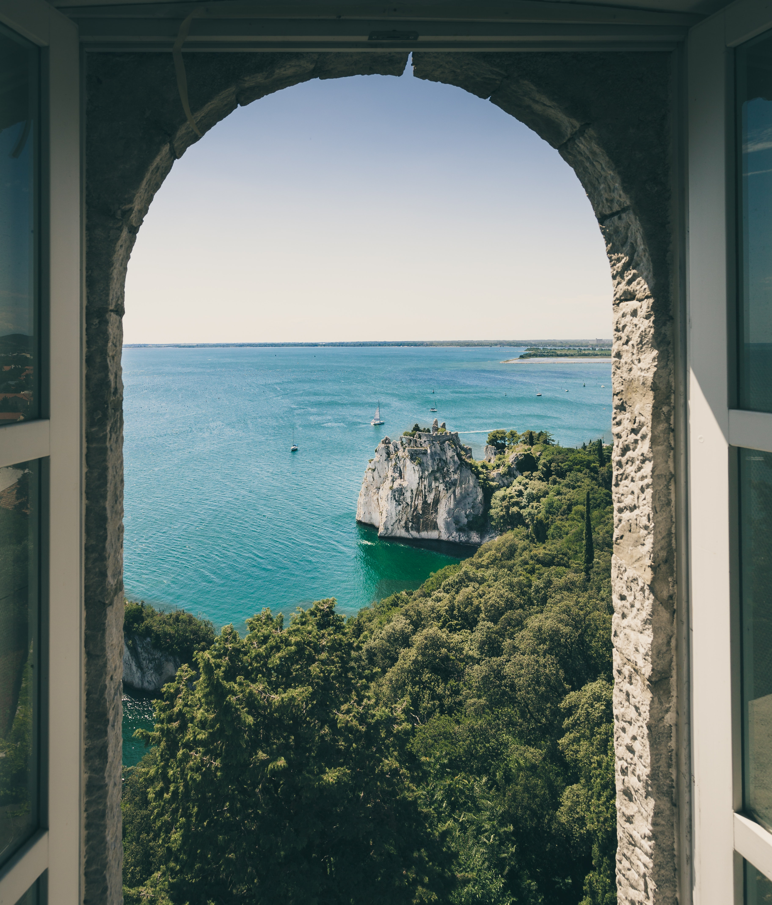
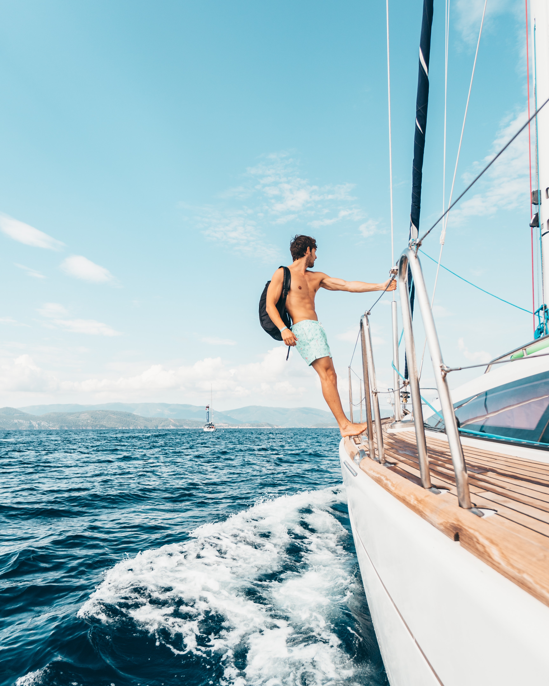

1
Путеводитель

Испания, Барселона
В Барселоне Средиземное море, невероятное чистое и красивое, комфортное и манящее. Желающих отдохнуть на море в Барселоне всегда достаточно, поэтому любители уединенного отдыха стараются отправиться на юг или на север от границ города, причем северное побережье даже живописнее, а вот следов цивилизации там встретится гораздо меньше. Море в Барселоне подарит вам тот отдых, о котором вы мечтали.

Италия, Рим
Амфитеатр, памятник архитектуры Древнего Рима, наиболее известное и одно из самых грандиозных сооружений Древнего мира, сохранившихся до нашего времени. Находится в Риме, в ложбине между Эсквилинским, Палатинским и Целиевским холмами.

Германия, Берлин
Кафедральный собор в Берлине - один из самых впечатляющих старинных сооружений, расположенных в центральной части города. Собор является самым большим представителем протестантской церкви в Германии и, расположен в южной части Музейного острова. Один из его фасадов выходит на единственную в Берлине площадь у воды – площадь Лустгартен.

Санторини, Греция
На многочисленных пляжах страны можно заняться виндсерфингом и дайвингом, прокатиться на яхте. Великолепные ландшафты Греции поражают воображение, теплый климат делает пешие прогулки возможными на протяжении круглого года. Еще одним востребованным направлением активного отдыха остается восхождение на главную вершину страны – Олимп, где, согласно многочисленным мифам и легендам, жили древнегреческие боги.